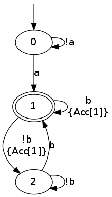
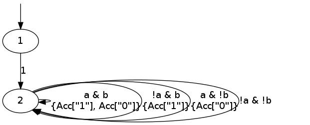

dstar2tgba
This tool converts deterministic Rabin and Streett automata, presented
in the format output by ltl2dstar, into Büchi automata.
It's usage is almost similar to ltl2tgba except that instead of
supplying a formula to translate, you should specify a filename
containing the deterministic Rabin or Streett automaton to convert.
Table of Contents
Two quick examples
Here are some brief examples before we discuss the behavior of
dstar2tgba in more detail.
From Rabin to Büchi
The following command instructs ltl2dstar to:
- run
ltl2tgba -sDto build a Büchi automaton forFa & GFb, and then - convert that Büchi automaton into a deterministic Rabin automaton
(DRA) stored in
fagfb.
Additionally we use ltlfilt to convert our formula to the
prefix format used by ltl2dstar.
ltlfilt -f 'Fa & GFb' -l | ltl2dstar --ltl2nba=spin:../../src/bin/ltl2tgba@-sD - fagfb
By looking at the file fagfb you can see the ltl2dsar actually
produced a 3-state DRA:
cat fagfb
DRA v2 explicit Comment: "Safra[NBA=3]" States: 3 Acceptance-Pairs: 1 Start: 1 AP: 2 "a" "b" --- State: 0 Acc-Sig: +0 2 2 0 0 State: 1 Acc-Sig: 1 0 1 0 State: 2 Acc-Sig: 2 2 0 0
dstar2tgba can now be used to convert this DRA into a TGBA, a BA, or
a Monitor, using the same options as ltl2tgba.
For instance here is the conversion to a Büchi automaton (-B) in GraphViz's format:
dstar2tgba -B fagfb
digraph G {
0 [label="", style=invis, height=0]
0 -> 1
1 [label="0"]
1 -> 2 [label="a\n"]
1 -> 1 [label="!a\n"]
2 [label="1", peripheries=2]
2 -> 2 [label="b\n{Acc[1]}"]
2 -> 3 [label="!b\n{Acc[1]}"]
3 [label="2"]
3 -> 2 [label="b\n"]
3 -> 3 [label="!b\n"]
}
Which can be rendered as:

But we could as well require the output to be output as a never claim for Spin (option -s):
dstar2tgba -s fagfb
never {
T0_init:
if
:: ((a)) -> goto accept_S2
:: ((!(a))) -> goto T0_init
fi;
accept_S2:
if
:: ((b)) -> goto accept_S2
:: ((!(b))) -> goto T0_S3
fi;
T0_S3:
if
:: ((b)) -> goto accept_S2
:: ((!(b))) -> goto T0_S3
fi;
}
Streett to TGBA
Here is the translation of GFa & GFb to a 4-state Streett automaton:
ltlfilt -f 'GFa & GFb' -l | ltl2dstar --automata=streett --ltl2nba=spin:../../src/bin/ltl2tgba@-sD - gfagfb
cat gfagfb
DSA v2 explicit
Comment: "Streett{Union{Safra[NBA=2],Safra[NBA=2]}}"
States: 4
Acceptance-Pairs: 2
Start: 0
AP: 2 "a" "b"
---
State: 0
Acc-Sig: -0 -1
3
2
1
0
State: 1
Acc-Sig: +0 -1
3
2
1
0
State: 2
Acc-Sig: -0 +1
3
2
1
0
State: 3
Acc-Sig: +0 +1
3
2
1
0
And now its conversion by dstar2tgba to a 2-state Büchi automaton.
We don't pass any option to dstar2tgba because converting to TGBA in
GraphViz's format is the default:
dstar2tgba gfagfb

(Obviously the resulting automaton could be simplified further, by starting with the second state right away.)
Details
General behavior
The dstar2tgba tool implement a 4-step process:
- read the DRA/DSA
- convert it into TGBA
- postprocess the resulting TGBA (simplifying the automaton, a degeneralizing it into a BA or Monitor if requested)
- output the resulting automaton
Controlling output
The last two steps are shared with ltl2tgba and use the same options.
The type of automaton to produce can be selected using the -B or -M
switches:
-B, --ba Büchi Automaton
-M, --monitor Monitor (accepts all finite prefixes of the given
formula)
--tgba Transition-based Generalized Büchi Automaton
(default)
And these may be refined by a translation intent, should the post-processor routine had a choice to make:
-a, --any no preference
-C, --complete output a complete automaton (combine with other
intents)
-D, --deterministic prefer deterministic automata
--small prefer small automata (default)
The effort put into post-processing can be limited with the --low or
--medium options:
--high all available optimizations (slow, default)
--low minimal optimizations (fast)
--medium moderate optimizations
For instance using -a --low will skip any optional post-processing,
should you find dstar2tgba too slow.
Finally, the output format can be changed with the following options:
-8, --utf8 enable UTF-8 characters in output (ignored with
--lbtt or --spin)
--dot GraphViz's format (default)
-H, --hoaf[=s|t|m|l] Output the automaton in HOA format. Add letters
to select (s) state-based acceptance, (t)
transition-based acceptance, (m) mixed acceptance,
(l) single-line output
--lbtt[=t] LBTT's format (add =t to force transition-based
acceptance even on Büchi automata)
-s, --spin Spin neverclaim (implies --ba)
--spot SPOT's format
--stats=FORMAT output statistics about the automaton
The --stats options can output statistics about the input and the
output automaton, so it can be useful to search for particular
pattern.
For instance here is a complex command that will
- generate an infinite stream of random LTL formulas with
randltl, - use
ltlfiltto rewrite the W and M operators away (--remove-wm), simplify the formulas (-r), remove duplicates (u) as well as formulas that have a size less then 3 (--size-min=3), - use
headto keep only 10 of such formula - loop to process each of these formula:
- print it
- then convert the formula into
ltl2dstar's input format, process it withltl2dstar(usingltl2tgbaas the actual LTL->BA transltor), and process the result withdstar2tgbato build a Büchi automaton (-B), favoring determinism if we can (-D), and finally displaying some statistics about this conversion.
The statistics displayed in this case are: %S, the number of states
of the input (Rabin) automaton, %s, the number of states of the
output (Büchi) automaton, %d, whether the output automaton is
deterministic, and %p whether the automaton is complete.
randltl -n -1 --tree-size=10..15 a b c | ltlfilt --remove-wm -r -u --size-min=3 | head -n 10 | while read f; do echo "$f" ltlfilt -l -f "$f" | ltl2dstar --ltl2nba=spin:../../src/bin/ltl2tgba@-sD - - | dstar2tgba -B --stats=' DRA: %Sst.; BA: %sst.; det.? %d; complete? %p' done
G((!a & c & F!c) | (a & (!c | Gc))) DRA: 6st.; BA: 3st.; det.? 1; complete? 0 G!c R (G!c | (!a & XGa) | (a & XF!a)) DRA: 7st.; BA: 4st.; det.? 1; complete? 0 G!c | G(a | c) DRA: 5st.; BA: 3st.; det.? 1; complete? 0 XGa DRA: 3st.; BA: 2st.; det.? 1; complete? 0 !b | ((Xb R (!a | Fb | Xb)) U (!c & (Xb R (!a | Fb | Xb)))) DRA: 8st.; BA: 6st.; det.? 1; complete? 1 G((b & X!c) | (!b & Xc)) DRA: 4st.; BA: 3st.; det.? 1; complete? 0 XX!b DRA: 5st.; BA: 4st.; det.? 1; complete? 0 GFb DRA: 3st.; BA: 3st.; det.? 1; complete? 1 F(G!a R (!b | G!a)) DRA: 10st.; BA: 10st.; det.? 0; complete? 0 F!c R F!a DRA: 8st.; BA: 5st.; det.? 1; complete? 1
An important point you should be aware of when comparing these numbers
of states is that the deterministic automata produced by ltl2dstar
are complete, while the automata produced by dstar2tgba
(deterministic or not) are not complete by default. This can explain
a difference of one state (the so called "sink" state).
You can instruct dstar2tgba to output a complete automaton using the
--complete option (or -C for short).
Conversion from Rabin and Streett to TGBA
The algorithms used to convert Rabin and Streett into TGBA/BA are different.
- Rabin to BA
The conversion implemented is a variation of Krishnan et al.'s "Deterministic ω-Automata vis-a-vis Deterministic Büchi Automata" (ISAAC'94) paper. They explain how to convert a deterministic Rabin automaton (DRA) into a deterministic Büchi automaton (DBA) when such an automaton exist. The surprising result is that when a DRA is DBA-realizable, a DBA can be obtained from the DRA without changing its transition structure.
Spot implements a slight refinement to the above technique: any DRA will be converted into a BA, and the determinism will be conserved only in strongly connected components where determinism can be conserved.
- Streett to TGBA
Streett automata are converted into non-deterministic TGBA. When a Streett automaton uses multiple acceptance pairs, we use generalized acceptance conditions in the TGBA to limit the combinatorial explosion.
A straightforward translation from Streett to BA, as described for instance by Löding's diploma thesis, will create a BA with \(|Q|\cdot(4^n-3^n+2)\) states if the input Streett automaton has \(|Q|\) states and \(n\) acceptance pairs. Our translation to TGBA limits this to \(|Q|\cdot(2^n+1)\) states.
Sometimes, as in the example for
GFa & GFbthe output of this conversion will happen to be deterministic. Let's say that this is luck: Spot does not implement any algorithm to preserve the determinism of Streett automata.